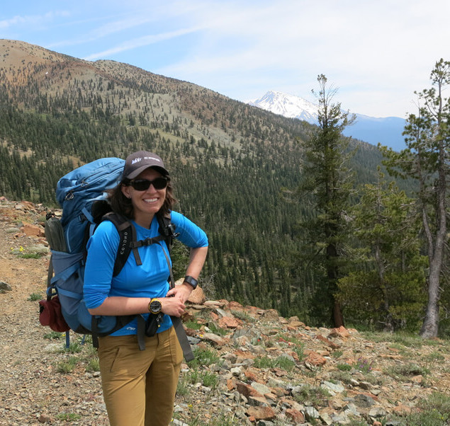
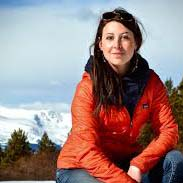
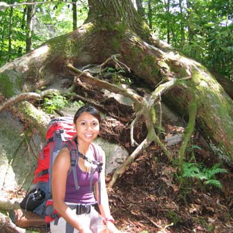

Travel can be a life-altering experience, even more so when it is done solo or with ample time to reflect. Here are 5 lessons that we learned from living a nomadic lifestyle.
Reading can be a wonderful form of adventure inspiration and a way to visit far-off places when you can't be traveling yourself. We here at Women on the Road community know that it can be difficult to find books great adventure themed books written by women, so we've compiled a list of books that we love and think you will too.
This book is amazing and if you have read it yet, you definitely should. Join Cheryl Strayed as she walks the PCT from Mexico to Cananda in the wake of her mother's death
In this memoir, Aspen Matis tells her story of thru-hiking, both of how she did it, what she carried, and what it gave her. We think you'll love this one. **Trigger Warning: ** Subject matter explicitly discusses sexual assault.
Jamie Zeppa writes about her experience living in Tibet for 3 years in a way that truly captures the spirit of solo travel.
We are so grateful for all of the amazing people who choose to share their stories on this blog each week. Today we want to highlight three amazing women who's journeys on the road have inspired us to live more fully and adventurely more fearlessly.
| Lily Williams | Sam Crow | Amy Phillips |
|---|---|---|
|  |  |  |
| Lily has been living on the road for the past three years. Just this past summer, she hiked the entire Pacific Crest Trail from the border of Mexico to the border of Canada. | Sam Crow has been living in her self-built van home for a little over a year now. She spends her summer working a Wilderness Therapy guide in Alaska and her off season climbing and canyoneering in the southern Utah desert. | Amy Phillips travels part-time with her husband and dog. Amy is a travel writer that has contributed some amazing stories to our blog and we are so glad to have her as part of our community. |